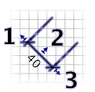

Umístìní a velikost rozmìrù mù¾ete upravit pohybem my¹i.
Nejprve v plánu oznaète rozmìr, který chcete upravit. Rozmìr vyberete tím, ¾e na nìj kliknete. Pro vybrání více rozmìrù v plánu je vyberte oznaèovacím rámeèkem, nebo na v¹echny postupnì klikejte a pøitom dr¾te stlaèenou klávesu Shift.
Vybraným rozmìrem mù¾ete pohybovat buï pohybem my¹i (chy» a pou¾ij), nebo ¹ipkami klávesnice
Máte-li vybrán jeden rozmìr, mù¾ete také :
- pohybovat jeho poèáteèním a koneèným bodem s pomocí indikátoru,
- mìnit velikost a vzdálenost rozmìru od mìøeného objektu s pomocí indikátoru.

|